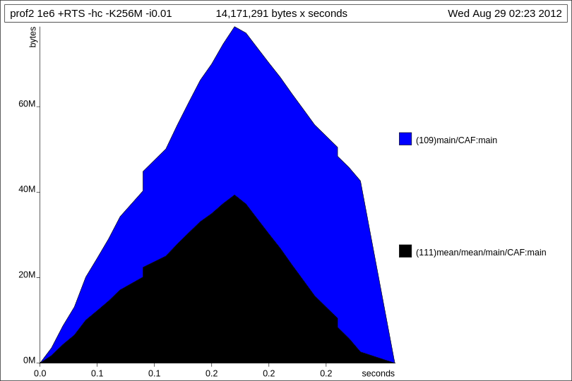
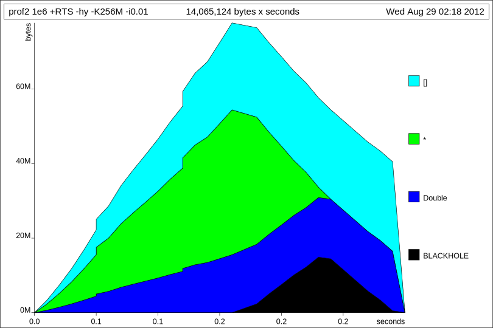

WAI: Motivation

www.yesodweb.com/blog/2011/03/preliminary-warp-cross-language-benchmarks
Chaos Computer Club Dresden
2012-08-29
Genesis: 1990
apt-get install ghc ghc-prof cabal-install # Updates list of known packages cabal update # Installs package with library profiling cabal install -p yesod-platform
Glasgow Haskell Compiler
Mit Dependencies
-p für Profiling
als User alles nach ~/.cabal
fac :: Integer -> Integer fac 1 = 1 fac n = n * fac (n - 1)
Fakultät
-> Impliziert
Pattern matching des Parameters
Integer is bignum, Int nicht
fac' :: Integer -> Integer
fac' n =
case n of
1 -> 1
_ -> n * fac (n - 1)
Pattern matching
Anonyme Variable
fac'' :: Integer -> Integer
fac'' n
| n <= 1 = 1
| otherwise = n * fac (n - 1)
Boolean expression
fac''' :: Integer -> Integer fac''' n = if n <= 1 then 1 else n * fac (n - 1)
Boolean expression
$ ghciREPL
Prelude> 2 : [] [2] Prelude> 23 : [] [23] Prelude> 23 : 42 : [] [23,42] Prelude> 23 : 42 : 5 : [] [23,42,5] Prelude> :t (:) (:) :: a -> [a] -> [a]
Prelude> :t map map :: (a -> b) -> [a] -> [b] Prelude> :t filter filter :: (a -> Bool) -> [a] -> [a] Prelude> :t foldl foldl :: (a -> b -> a) -> a -> [b] -> a
fib :: Integer -> Integer
fib 0 = 0
fib 1 = 1
fib n =
let r = fib $ n - 1
r' = fib $ n - 2
in r + r'
facs = 1 : go 2 where go :: Integer -> [Integer] “Unterfunktion” go n = n : map (* n) (go $ n + 1) Prelude> :t facs Inferred type facs :: [Integer] Prelude> facs !! 500 Unendlich, lazy 611288549821546144419320631496946510053040745744399613938399207781308531950094880800353720198603844213369821855051249995665852739761166777440873387784823972024431693541604632490253390402221485016448489094881275898497140756808655499992463957536774753658273522343143352081610678258299859781290947510064133164625417126214683287364306533202043771696934819148200603488701298578593288295101675375228475039194518540926501811512211084741146359555616051391364512171815202852428391973770531819587555590747725222707870915089204322125602187745638954304887403405330317436980872692673627514602895425139803517823839455807896878364709108235036658336397561844224198282288969461157203049314666899393600517284430144216183492154249948251192663554129489210224225335784718743202172831724716080857069568307715110065035130707514179942202121569852186583424945734289322385681601382444331381680307765142985006245859526451817213228740320341074735777885270328149239431528071389670544598095262337701383222299067569757970109034425702794542448640000000000000000000000000000000000000000000000000000000000000000000000000000000000000000000000000000000000000000000000000000
($)
Num: Interface für (+), (*)
Prelude> :t (\n -> n + 1) (\n -> n + 1) :: Num a => a -> a Prelude> (\n -> n + 1) 22 23
Prelude> :t (\a b c -> a * b * c) (\a b c -> a * b * c) :: Num a => a -> a -> a -> a
Prelude> :t (\a -> \b -> \c -> a * b * c) (\a -> \b -> \c -> a * b * c) :: Num a => a -> a -> a -> a
Umkehrschluß: Currying
:t map (\a -> a + 1) map (\a -> a + 1) :: Num b => [b] -> [b]
Prelude> :t (+ 1) (+ 1) :: Num a => a -> a Prelude> map (+ 1) [1..10] [2,3,4,5,6,7,8,9,10,11]
Prelude> :i (.) (.) :: (b -> c) -> (a -> b) -> a -> c -- Defined in `GHC.Base' infixr 9 . Prelude> :t (+ 5) . (* 3) (+ 5) . (* 3) :: Num c => c -> c Prelude> ((+ 5) . (* 3)) 23 74
Statt NULL-Pointer
data Maybe a = Nothing
| Just a
Prelude> :t Nothing Constructors Nothing :: Maybe a Passt auf alle a Prelude> :t Just Just :: a -> Maybe a
data [] a = []
| a : [a]
Typ-Alias
type String = [Char]
newtype Name = Name String Typename = Ctor
data MeinTyp = MeinKonstruktor String Integer Prelude> :t MeinKonstruktor MeinKonstruktor :: String -> Integer -> MeinTyp
Für data & newtype weiterhin mit nur 1 Feld
data MeinTyp = MeinKonstruktor {
meinString :: String
, meinInteger :: Integer
}
-- Lesbare Konstruktion
fnord = MeinKonstruktor {
meinString = "fnord"
, meinInteger = 23
}
Prelude> :t meinString Accessor
meinString :: MeinTyp -> String
Prelude> :t meinInteger
meinInteger :: MeinTyp -> Integer
Prelude> meinInteger fnord
23class Show a where show :: a -> String
instance Show MeinTyp where show (MeinDatum n) = "MeinDatum " ++ show n
Wie interface in Java
Prelude> :i Num class Num a where (+) :: a -> a -> a (*) :: a -> a -> a (-) :: a -> a -> a negate :: a -> a abs :: a -> a signum :: a -> a fromInteger :: Integer -> a -- Defined in `GHC.Num' instance Num Integer -- Defined in `GHC.Num' instance Num Int -- Defined in `GHC.Num' instance Num Float -- Defined in `GHC.Float' instance Num Double -- Defined in `GHC.Float'
Funktioniert mit grundlegenden Datentypen:
class Eq a where (==) :: a -> a -> Bool (/=) :: a -> a -> Bool
class Eq a => Ord a where compare :: a -> a -> Ordering
class Enum a where succ :: a -> a pred :: a -> a
class Bounded a where minBound :: a maxBound :: a
class Show a where show :: a -> String
read :: Read a => String -> a
Anwendungsbeispiel:
Prelude> newtype Zeigbar = Zeig String deriving Show Prelude> putStrLn $ show $ Zeig "Hello" Zeig "Hello"
Am Beginn von Quellcode-Dateien:
module MeinKram where
module Main (main) where import MainKram import qualified Data.Text as T fnord :: T.Text fnord = T.pack "fnord"
Eine Funktion, die jeder liebt:
map :: (a -> b) -> [] a -> [] b -- map :: (a -> b) -> [a] -> [b]
Wie sieht so eine Funktion z.B. fuer Baeume aus?
data Tree a = Leaf a | Node a (Tree a) (Tree a)
mapTree :: (a -> b) -> Tree a -> Tree b
Maybe just nothing
data Maybe a = Just a | Nothing
mapMaybe :: (a -> b) -> Maybe a -> Maybe b
map :: (a -> b) -> [] a -> [] b
mapTree :: (a -> b) -> Tree a -> Tree b
mapMaybe :: (a -> b) -> Maybe a -> Maybe b
Die Funktionen haben - bis auf Umbenennung des Typ-Konstruktors - die gleiche Signatur
Type classes to the rescue!
Zuvor aber ein kleiner Ausflug
In Haskell hat jeder Ausdruck einen Typ
Diese Typen haben wiederum "Typen" - Kinds
* ist der Kind jedes Datentyps (nullstelliger Typ-Konstruktor)
Diese Typen beschreiben Werte
k1->k2 ist der Kind von einstelligen Typ-Konstruktoren, die Typen von Kind k1 nehmen und Typen von Kind k2 erzeugen
Monomorph
Int :: * -- z.B. 42
Maybe Int :: * -- z.B. Just 23
Int -> Int :: * -- z.B. (+23)
Polymorph
Maybe :: * -> *
(->) :: * -> *
(,,) :: * -> * -> *
Lustig
data Funny f a = Funny a (f a) Funny :: (* -> *) -> * -> *
map :: (a -> b) -> [] a -> [] b
mapTree :: (a -> b) -> Tree a -> Tree b
mapMaybe :: (a -> b) -> Maybe a -> Maybe b
Zusammengefasst ergibt sich also folgendes:
map :: (a -> b) -> f a -> f b
f ist demnach vom Kind * -> *
Ist es moeglich die Funktion einmalig fuer alle Typen dieses Kinds schreiben?
Nein, natuerlich nicht!
class Functor f where fmap :: (a -> b) -> f a -> f b
Ein Functor stellt eine Art Container dar, der es ermoeglicht (mit fmap) eine Funktion (uniform) auf alle Elemente in diesem Container anzuwenden
Alternativ dazu kann man Functor auch als einen computational context sehen und fmap wendet eine Funktion auf einen Wert in einem Kontext an ohne diesen Kontext zu aendern
instance Functor Int where fmap = ...
[1 of 1] Compiling Main ( 2012-03-15.lhs, interpreted )
2010-10-25.lhs:145:19:
Kind mis-match
The first argument of `Functor' should have kind `* -> *',
but `Int' has kind `*'
In the instance declaration for `Functor Int'
Wie die Fehlermeldung vermuten laesst, hat Int den Kind *
Functor moechte aber, dass sein erstes Argument Kind * -> * hat
instance Functor [] where fmap _ [] = [] fmap g (x:xs) = g x : fmap g xs -- oder einfach fmap = map
Listen sind ein gutes Beispiel fuer einen Functor, der als Container - ueber den man mappen kann - aufgefasst werden kann
Kann aber auch als Berechnung mit nicht-deterministischen Ergebnis gesehen werden
Da fmap den Kontext nicht aendert ist das Resultat wiederum nicht-deterministisch
$ ghci Prelude> fmap (+1) [1,2,3] [2,3,4]
instance Functor Maybe where fmap _ Nothing = Nothing fmap g (Just a) = Just (g a)
Maybe kann als Container gesehen werden, der ein Element haben kann
Oder als Berechnung mit moeglichem Fehlschlag
$ ghci Prelude> fmap (+23) (Just 19) Just 42 Prelude> fmap (+23) Nothing Nothing
instance Functor ((->) r) where
fmap f g = (.) -- (\x -> f (g x))
fmap :: (a -> b) -> f a -> f b fmap :: (a -> b) -> ((->) r a) -> ((->) r b) fmap :: (a -> b) -> (r -> a) -> (r -> b)
(.) :: (b -> c) -> (a -> b) -> a -> c
Container, der mit Werten vom Typ r indiziert ist
Berechnung, die Werte in einer (read-only) Umgebung nachschlagen kann
(->) r wird deshalb oftmals auch als reader monad bezeichnet (mehr dazu spaeter)
$ ghci Prelude> :m Control.Monad.Instances Prelude Control.Monad.Instances> fmap (*3) (+10) $ 1 33 Prelude Control.Monad.Instances> (fmap (*3) (+10) $ 1) == ((*3) . (+10) $ 1) True
1. fmap id = id -- id = (\x -> x) und damit id :: a -> a 2. fmap (g . h) = (fmap g) . (fmap h)
Sichern, dass fmap nur die Werte, nicht aber deren Kontext aendert
1. Wenn man id ueber einen Functor mapped, sollte der resultierende Functor gleich dem urspruenglichen sein
2. Es ist egal ob man die Komposition zweier Funktionen ueber einen Functor mapped oder erst die eine Funktion mapped und dann die andere
instance Functor [] where fmap _ [] = [] fmap g (x:xs) = g x : g x : fmap g xs
Gueltige Functor Instanz
Aber: haelt sich nicht an das erste Gesetz!
fmap id [1,2,3] == [1,1,2,2,3,3] id [1,2,3] == [1,2,3]
Und: haelt sich nicht an das zweite Gesetz!
fmap (id . id) [1,2,3] == [1,1,2,2,3,3] (fmap id) . (fmap id) $ [1,2,3] == [1,1,1,1,2,2,2,2,3,3,3,3]
fmap liftet eine (normale) Funktion zu einer Funktion, die in einem Kontext verwendet werden kann
Man kann aber mit fmap keine Funktion, die selbst in einem Kontext liegt, auf Werte in einem Kontext anwenden
Z.B. kann man mit fmap keine Liste von Funktionen auf eine Liste von Werten anwenden
$ ghci Prelude> fmap [(+1), (+2)] [0,0]:2:6: Couldn't match expected type `a0 -> b0' with actual type `[t0]' In the first argument of `fmap', namely `[(+ 1), (+ 2)]' In the expression: fmap [(+ 1), (+ 2)] [0, 0] In an equation for `it': it = fmap [(+ 1), (+ 2)] [0, 0]
class Functor f => Applicative f where pure :: a -> f a (<*>) :: f (a -> b) -> f a -> f b
Ein Functor stellt eine Art Container dar, der es ermoeglicht (mit fmap) eine Funktion (uniform) auf alle Elemente in diesem Container anzuwenden
Alternativ dazu kann man Functor auch als einen computational context sehen und fmap wendet eine Funktion auf einen Wert in einem Kontext an ohne diesen Kontext zu aendern
import Text.ParserCombinators.Parsec
{- A CSV file contains 0 or more lines, each of which is terminated
by the end-of-line character (eol). -}
csvFile :: GenParser Char st [[String]]
csvFile =
do result <- many line
eof
return result
-- Each line contains 1 or more cells, separated by a comma
line :: GenParser Char st [String]
line =
do result <- cells
eol -- end of line
return result
-- Build up a list of cells. Try to parse the first cell, then figure out
-- what ends the cell.
cells :: GenParser Char st [String]
cells =
do first <- cellContent
next <- remainingCells
return (first : next)
-- The cell either ends with a comma, indicating that 1 or more cells follow,
-- or it doesn't, indicating that we're at the end of the cells for this line
remainingCells :: GenParser Char st [String]
remainingCells =
(char ',' >> cells) -- Found comma? More cells coming
<|> (return []) -- No comma? Return [], no more cells
-- Each cell contains 0 or more characters, which must not be a comma or
-- EOL
cellContent :: GenParser Char st String
cellContent =
many (noneOf ",\n")
-- The end of line character is \n
eol :: GenParser Char st Char
eol = char '\n'
parseCSV :: String -> Either ParseError [[String]]
parseCSV input = parse csvFile "(unknown)" input
import Text.ParserCombinators.Parsec csvFile = endBy line eol line = sepBy cell (char ',') cell = many (noneOf ",\n") eol = char '\n' parseCSV :: String -> Either ParseError [[String]] parseCSV input = parse csvFile "(unknown)" input
Beispiel aus Real World Haskell, Chapter 25:
import System.Environment
import Text.Printf
main = do
[d] <- map read `fmap` getArgs
printf "%f\n" (mean [1..d])
mean :: [Double] -> Double
mean xs = sum xs / fromIntegral (length xs)
% time ./prof1 1e5 50000.5 ./prof1 1e5 0.03s user 0.01s system 89% cpu 0.049 total % time ./prof1 1e6 500000.5 ./prof1 1e6 0.31s user 0.09s system 98% cpu 0.400 total % time ./prof1 1e7 5000000.5 ./prof1 1e7 2.95s user 0.60s system 97% cpu 3.626 total % time ./prof1 1e8 zsh: killed ./prof1 1e8 ./prof1 1e8 6.72s user 2.71s system 91% cpu 10.368 total
% ghc --make -O2 -prof -caf-all -auto-all prof1
% ./prof1 1e7 +RTS -p -P, -pa
5000000.5
% cat prof1.prof
Wed Aug 29 02:04 2012 Time and Allocation Profiling Report (Final)
prof1 +RTS -p -RTS 1e7
total time = 1.74 secs (1738 ticks @ 1000 us, 1 processor)
total alloc = 1,680,119,104 bytes (excludes profiling overheads)
COST CENTRE MODULE %time %alloc
main Main 86.6 100.0
mean Main 13.4 0.0
individual inherited
COST CENTRE MODULE no. entries %time %alloc %time %alloc
MAIN MAIN 55 0 0.0 0.0 100.0 100.0
main Main 111 0 86.6 100.0 100.0 100.0
mean Main 113 1 13.4 0.0 13.4 0.0
CAF:main1 Main 108 0 0.0 0.0 0.0 0.0
main Main 110 1 0.0 0.0 0.0 0.0
CAF:main3 Main 107 0 0.0 0.0 0.0 0.0
main Main 112 0 0.0 0.0 0.0 0.0
CAF GHC.Conc.Signal 101 0 0.0 0.0 0.0 0.0
CAF GHC.IO.Encoding 100 0 0.0 0.0 0.0 0.0
CAF GHC.IO.Handle.FD 99 0 0.0 0.0 0.0 0.0
CAF Text.Read.Lex 95 0 0.0 0.0 0.0 0.0
CAF GHC.Float 90 0 0.0 0.0 0.0 0.0
CAF GHC.IO.Encoding.Iconv 82 0 0.0 0.0 0.0 0.0
% ghc --make -rtsopts -prof -caf-all -auto-all prof1 % ./prof1 1e6 +RTS -K256M -hc -i0.01 % hp2ps -c prof1.hp
% ./prof1 1e6 +RTS -K256M -hy -i0.01 % hp2ps -c prof1.hp
Auch: GHC Core output
import System.Environment
import Text.Printf
import Data.List (foldl')
main = do
[d] <- map read `fmap` getArgs
printf "%f\n" (mean [1..d])
mean :: [Double] -> Double
mean xs = s / fromIntegral n
where
(n, s) = foldl' k (0, 0) xs
k (n, s) x = n `seq` s `seq` (n+1, s+x)
% ./prof2 1e8 +RTS -sstderr
50000000.5
53,600,200,824 bytes allocated in the heap
31,319,592 bytes copied during GC
62,720 bytes maximum residency (1 sample(s))
26,816 bytes maximum slop
1 MB total memory in use (0 MB lost due to fragmentation)
Tot time (elapsed) Avg pause Max pause
Gen 0 102796 colls, 0 par 0.66s 0.66s 0.0000s 0.0003s
Gen 1 1 colls, 0 par 0.00s 0.00s 0.0006s 0.0006s
INIT time 0.00s ( 0.00s elapsed)
MUT time 32.71s ( 32.84s elapsed)
GC time 0.66s ( 0.66s elapsed)
RP time 0.00s ( 0.00s elapsed)
PROF time 0.00s ( 0.00s elapsed)
EXIT time 0.00s ( 0.00s elapsed)
Total time 33.38s ( 33.50s elapsed)
%GC time 2.0% (2.0% elapsed)
Alloc rate 1,638,238,233 bytes per MUT second
Productivity 98.0% of total user, 97.7% of total elapsed
In RWH: unboxed strict fields, fusion w/o heap alloc
Stream processing
Gegen unkontrollierte Lazyness
Control.Monad.Trans.Resource> :i MonadResource
class (MonadThrow m, MonadUnsafeIO m,
Control.Monad.IO.Class.MonadIO m,
Control.Applicative.Applicative m) => MonadResource m where
register :: IO () -> m ReleaseKey
release :: ReleaseKey -> m ()
allocate :: IO a -> (a -> IO ()) -> m (ReleaseKey, a)
resourceMask ::
((forall a. ResourceT IO a -> ResourceT IO a) -> ResourceT IO b)
-> m b
-- Defined in `Control.Monad.Trans.Resource'
Data.Conduit> :i Pipe
data Pipe l i o u m r
= Data.Conduit.Internal.HaveOutput (Pipe l i o u m r) (m ()) o
| Data.Conduit.Internal.NeedInput (i -> Pipe l i o u m r)
(u -> Pipe l i o u m r)
| Data.Conduit.Internal.Done r
| Data.Conduit.Internal.PipeM (m (Pipe l i o u m r))
| Data.Conduit.Internal.Leftover (Pipe l i o u m r) l
instance Monad m => Monad (Pipe l i o u m)
instance Monad m => Functor (Pipe l i o u m)
Data.Conduit> :i Conduit type Conduit i m o = Pipe i i o () m ()
Data.Conduit> :i Source type Source m o = Pipe () () o () m ()
Data.Conduit> :i Sink type Sink i m r = Pipe i i Data.Void.Void () m r
Data.Conduit> :i ($$) ($$) :: Monad m => Source m a -> Sink a m b -> m b infixr 0 $$
Data.Conduit> :i (=$=) (=$=) :: Monad m => Conduit a m b -> Conduit b m c -> Conduit a m c infixr 2 =$=
Data.Conduit> :i ($=) ($=) :: Monad m => Source m a -> Conduit a m b -> Source m b infixl 1 $=
Data.Conduit> :i (=$) (=$) :: Monad m => Conduit a m b -> Sink b m c -> Sink a m c infixr 2 =$
module Main (main) where
import Data.Conduit
import qualified Data.Conduit.Binary as CB
import System.Environment (getArgs)
copyFile :: FilePath -> FilePath -> IO ()
copyFile src dest = runResourceT $ CB.sourceFile src $$ CB.sinkFile dest
main = getArgs >>= \[src, dest] ->
copyFile src dest
{-# LANGUAGE BangPatterns #-}
module Main (main) where
import Data.Conduit
import qualified Data.Conduit.Binary as CB
import System.Environment (getArgs)
import Control.Monad.Trans
import qualified Data.ByteString as B
copyFile :: FilePath -> FilePath -> IO ()
copyFile src dest = runResourceT $
CB.sourceFile src $=
countBytes $$
CB.sinkFile dest
main = getArgs >>= \[src, dest] ->
copyFile src dest
countBytes :: MonadIO m => Conduit B.ByteString m B.ByteString
countBytes =
let loop !total =
do mBuf <- await
case mBuf of
Just buf ->
do yield buf
loop $ total + B.length buf
Nothing ->
do liftIO $ putStrLn $
"Transferred " ++
show total ++
" bytes"
return ()
in loop 0
Network.Wai> :i Application type Application = Request -> ResourceT IO Response
Network.Wai> :i Middleware type Middleware = Application -> Application
Network.Wai.Middleware.Autohead> :t autohead autohead :: Network.Wai.Middleware Network.Wai.Middleware.Gzip> :t gzip gzip :: GzipSettings -> Network.Wai.Middleware
Prelude Network.Wai> :i Request
data Request
= Request {requestMethod :: Method,
httpVersion :: HttpVersion,
rawPathInfo :: ByteString,
rawQueryString :: ByteString,
serverName :: ByteString,
serverPort :: Int,
requestHeaders :: RequestHeaders,
isSecure :: Bool,
remoteHost :: SockAddr,
pathInfo :: [Text],
queryString :: Query,
requestBody :: Source (ResourceT IO) ByteString,
vault :: Vault}
Prelude Network.Wai> :i Response data Response = ResponseFile Status ResponseHeaders FilePath (Maybe FilePart) | ResponseBuilder Status ResponseHeaders Builder | ResponseSource Status ResponseHeaders (Source (ResourceT IO) (Flush Builder))